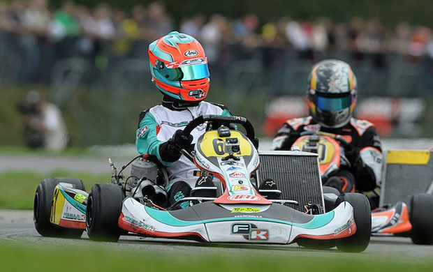

Спортивные классы в Картинге
Ежегодно, Российская автомобильная федерация (РАФ)
выпускает свод основных документов, связанных с автоспортом,
которые
описывают различные правила.
Среди этих правил – определение технических и возрастных требований
для различных гоночных
картинговых классов.
На какие гоночные классы делятся пилоты? Давайте разберемся.
Ниже перечислены основные гоночные классы
Дети и Юниоры

Микро
Класс для гонщиков от 6 до 9 лет. Гоночная категория для самых маленьких пилотов.
На карт класса “Микро” установлен
одноцилиндровый двигатель воздушного охлаждения
PARILLA 60 SWIFT/RUS . Двигатель итальянского производства.
Один из
наименее строгих классов по техническим требованиям. Соревнования проводятся как Серия РАФ.
Мини (8-12 лет)
Класс для гоншиков от 8 до 12 лет. Двигатель: серийный одноцилиндровый двигатель
воздушного охлаждения PARILLA 60
SWIFT/RU. Производство – IAME s.p.a. (Италия).
Объем цилиндра 60 см3. В классе установлено много технических
предписаний.
Например, применение оригинальной центробежной муфты.
Соревнования проводятся как Первенство России.
Супер Мини (10-14 лет)
Достаточно развитый юниорский гоночный класс. На карты установлен серийный одноцилиндровый двигатель
PARILLA 60
SWIFT/RUS, без коробки передач, с центробежной муфтой и электрическим стартером.
Производство – IAME s.p.a. (Италия).
Технический регламент делает этот класс более быстрым
среди тех где используется двигатель Parilla 60. Соревнования
проводятся как Первенство России.